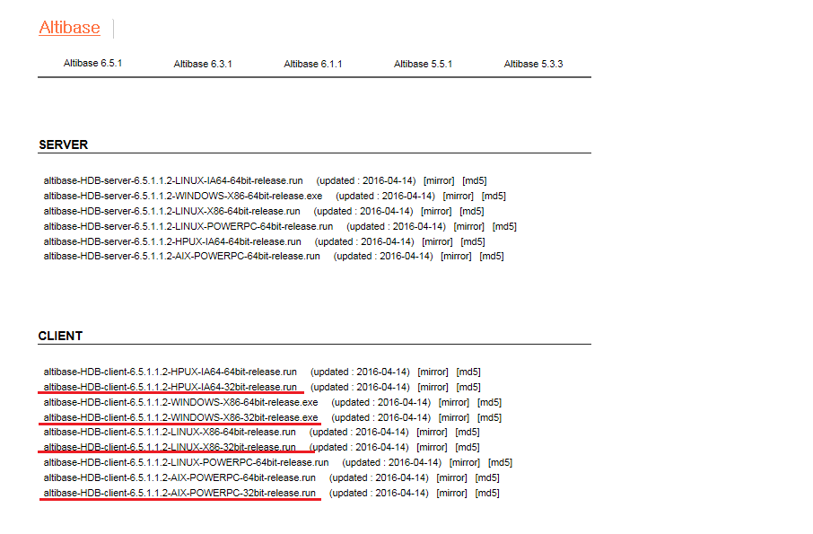

Makefile의 구조에 대한 이해를 위해서 간단한 c코드를 가지고 Makefile을 만들어 보도록 한다. Altibase Makefile규약은 GNU규약을 준수함으로 gmake사용을 권장하며 본 문서에서는 그와 상관없이 일반적 규약에 맞게 설명한다.
Makefile의 기본 구조
makefile은 실행 파일을 만들기 위해 진행되는 과정들을 하나의 스크립트 언어로 정의한 것이다. 다음의 간단한 소스를 컴파일 해보도록 한다.
#include <stdio.h>
main()
{
printf (“hello, world\n”);
}
이 소스는 프롬프트 상에서 다음과 같이 컴파일을 할 수 있다.
Shell> cc –o a a.c
다음과 같은 가장 간단한 Makefile 스크립트로 작성하여 make를 이용하여 컴파일 할 수 있다.
shell> vi Makefile
a:a.c # 사용자가 만드는 규약 및 의존성
cc -o a a.c # 실제 수행할 명령어 라인을 기술
- a:a.c 는 a를 만들기 위해서는 a.c를 찾아라 ( 변경되었는지 검사하라 )
- cc -o a.c 는 a.c가 존재하는 게 확인되면 이 명령을 수행하라
- shell> make -f Makefile 파일명이 Makefile 인 경우 -f Makefile 은 생략이 가능하다.
Makefile은 위에 기술된 것과 같이 목표를 만들기 위해 소스를 탐색하고 나열된 명령어들을 기술하는 하나의 스크립트라고 이해라고 이해 할 수 있다. 동일한 소스에 대해 변경 분이 없는 경우에는 컴파일이 수행될 필요가 없기 때문에 “make: is up to date” 라는 에러를 만나게 된다.
예제소스
앞으로 진행할 예제는 Altibase가 설치된 디렉토리의 sample 소스 중에 포함되어 있는 $ALTIBASE_HOME/sample/APRE/connect1.sc 를 활용한다. ( Altibase 5.3 이상을 기준으로 한다 )
본 예제는 Linux 에서 gcc 컴파일러를 기준으로 컴파일하는 환경을 기준으로 작성되었으므로 기타 다른 Unix 환경과 컴파일러를 사용할 경우는 Makefile 일부는 해당 환경에 맞게 다르게 작성되어야 한다.
소스의 일부분은 아래와 같다.
Shell> vi connect1.sc
int main()
{
char usr[20];
char pwd[20];
char opt [200];
sprintf (usr, “sys”);
sprintf (pwd, “manager”);
sprintf (opt, “DSN=127.0.0.1;CONNTYPE=1;PORT_NO=27584”);
EXEC SQL CONNECT :usr IDENTIFIED BY :pwd USING :opt ;
if (sqlca.sqlcode != 0)
printf (“ConnectErr: %d-%s\n”, SQLCODE,sqlca.sqlerrm.sqlerrmc);
Precompile 수행
Altibase의 APRE 확장자는 "*.sc" 를 사용한다. 이 파일은 C/C++컴파일러가 바로 해석할 수 있는 형태가 아니기 때문에 Altibase가 제공하는 프리컴파일러를 통해 C/C++ 소스로 변환해야 한다.
Makefile 내용
connect1.sc:connect1.sc apre -t c connect1.sc
실행
Shell> make -f Makefile connect1.sc
이렇게 Makefile 파일을 만든 후 실행해보면 connect1.c가 새롭게 생성되는 것을 확인할 수 있다. ( 확장자 옵션에 따라서 C/C++ 로 사용자 환경에 맞게 변경한다.)
컴파일 수행
이제 실행 파일인 connect1 으로 만들기 위해 Makefile 에 규약을 추가한다.
|
물론, connect1 규약에 프리컴파일 규약을 쓰고 컴파일 하는 규약을 써도 무방하다. 여기서는 각각 구분 지어 설명하도록 하겠다. 위에서는 make단계에서 connect1 규약이 connect1.c를 필요로 하기 때문에 Makefile내에서 connect1.c에 대한 규약을 찾는다.
Makefile내에 해당 규약이 있기 때문에 먼저 프리컴파일을 수행하고 cc컴파일을 수행하는 순서로 동작하게 된다. 하지만 실제 컴파일을 하면 다음과 같은 오류를 만나게 된다
$ make -f Makefile connect1
apre -t c connect1.sc
-----------------------------------------------------------------
Altibase C/C++ Precompiler.
Release Version 6.5.1.3.0
Copyright 2000, ALTIBASE Corporation or its subsidiaries.
All Rights Reserved.
-----------------------------------------------------------------
cc -o connect1 connect1.c
connect1.c:9:29: error: ulpLibInterface.h: No such file or directory
connect1.c: In function 'main':
connect1.c:68: error: storage size of 'ulpSqlstmt' isn't known
..........................................................
make: *** [connect1] Error 1
굵게 표시된 줄을 보면 헤더 파일을 찾을 수 없다는 오류가 발생했음을 알 수 있다. Makefile에서는 컴파일 하기 위해 사용자가 소스상에 사용한 헤더와 라이브러리에 대한 경로를 다음 단계의 설명과 같이 명시해야 한다.
Header 파일과 Library 경로의 명시
Header 파일과 Library를 참조할 수 있도록 다음과 같이 Makefile을 수정한다.
Shell> vi Makefile
ALTI_INCLUDE=${ALTIBASE_HOME}/include
ALTI_LIBRARY=${ALTIBASE_HOME}/lib
connect1.c: connect1.sc
apre –t c connect1.sc
connect1 : connect1.c
cc –o connect1 connect1.c –I$(ALTI_INCLUDE) –L$(ALTI_LIBRARY)
ALTI_INCLUDE와 ALTI_LIBRARY와 같이 사용자 계정의 환경변수를 설정하듯이 Makefile내에서만 적용 가능한 환경변수를 설정하고 이것을 컴파일 명령어 라인에 추가한다. 이후 실행 결과는 앞서 실행한 결과와는 다른 오류를 보여 준다.
$ make connect1
apre -t c connect1.sc
cc -o connect1 connect1.c -I/altibase_home/include -L/ssd/altibase_home/lib
/tmp/ccREjTkg.o: In function `main':
connect1.c:(.text+0x13a): undefined reference to `ulpGetSqlca'
.............................................................................
............................................................................
collect2: ld returned 1 exit status
make: *** [connect1] Error 1
위 에러는 소스상에서 사용되는 함수들이 정의된 라이브러리가 명시되지 않았기 때문에 컴파일 단계에서 참조하려고 하는데 찾을 수 없을 경우 발생한다. 헤더의 경우는 개별 헤더파일을 모두 명시하지 않아도 되지만 라이브러리의 경우는 반드시 명시해야 한다.
APRE 컴파일을 위한 기본 Library 명시
다음과 같이 Makefile 을 수정한다.
APRE 용 기본 Library 추가
$ vi Makefile
ALTI_INCLUDE=${ALTIBASE_HOME}/include
ALTI_LIBRARY=${ALTIBASE_HOME}/lib -lapre -lodbccli
connect1.c:connect1.sc
cc -o connect1 connect1.c -I$(ALTI_INCLUDE) -L$(ALTI_LIBRARY)
Altibase는 프리컴파일을 통한 바이너리 생성시에 (apre, odbccli)라는 2개의 라이브러리를 필요로 한다. 이것은 ($ALTIBASE_HOME/lib)에 위치한다. Makefile내에서 라이브러리에 대한 표기는 "-I" 옵션으로 지정하며 해당 파일을 실제 보면 "libapre.a" 혹은 "libapre_sl.so" 형태로 존재하는데 라이브러리명에서 "lib"와 확장자(.a 또는 .so)를 제거한 이름만 명시하면 된다.
시스템 Library의 추가
기본 Library 만 추가한 상태에서 다시 컴파일한 후 실행된 결과를 확인하면 다음과 같이 여전히 오류가 발생한다.
$ make connect1
apre -t c connect1.sc
cc -o connect1 connect1.c -I/ssd/altibase_home/include -L/ssd/altibase_home/lib -lapre -lodbccli
/ssd/altibase_home/lib/libapre.a(ulpLibInterface.o): In function `ulpLibInit':
ulpLibInterface.c:(.text+0x77): undefined reference to `pthread_rwlock_init'
/ssd/altibase_home/lib/libapre.a(ulpLibInterface.o): In function `ulpDoEmsql':
ulpLibInterface.c:(.text+0x1e6): undefined reference to `pthread_rwlock_wrlock'
...........................................
...........................................
위의 에러 메세지는 APRE library 내에서 사용된 POSIX thread 함수를 위한 thread Library를 찾지 못해서 발생하는 에러이다. 앞서 필요한 Library를 추가해 준 것과 마찬가지로 다음 단계와 같이 APRE에서 참조하는 기타 Library 들도 Makefile 에 추가해 줘야 한다.
$ vi Makefile
ALTI_INCLUDE=${ALTIBASE_HOME}/include
ALTI_LIBRARY=${ALTIBASE_HOME}/lib -lapre -lodbccli -lpthread
connect1.c:connect1.sc
cc -o connect1 connect1.c -I$(ALTI_INCLUDE) -L$(ALTI_LIBRARY)
컴파일에 필요한 추가적인 시스템 library와 각 컴파일 옵션은 OS 환경과 컴파일러의 종류에 따라 다르며 자세한 내용은 본 문서의 각 컴파일러별 설명을 참조하기 바란다.
아래의 방법을 사용하여 apre 컴파일시에 필요한 시스템 Library 의 목록을 확인한 후 Library를 Makefile 에 추가해 줄 수 있다.
Altibase 의 sample용 Makefile 을 참고하는 방법
- ldd 명령을 사용하는 방법
- nm 명령을 사용하는 방법
- man page 를 참고하는 방법
Altibase 의 sample용 Makefile 을 참고
ldd 명령의 활용
ldd 명령의 사용은 다음과 같다.
$ ldd $ALTIBASE_HOME/bin/apre
linux-vdso.so.1 => (0x00007fff977ff000)
libdl.so.2 => /lib64/libdl.so.2 (0x000000369c200000)
libpthread.so.0 => /lib64/libpthread.so.0 (0x000000369ca00000)
libcrypt.so.1 => /lib64/libcrypt.so.1 (0x00000036a9600000)
librt.so.1 => /lib64/librt.so.1 (0x000000369d600000)
libstdc++.so.6 => /usr/lib64/libstdc++.so.6 (0x00000036a1600000)
libm.so.6 => /lib64/libm.so.6 (0x000000369ce00000)
libgcc_s.so.1 => /lib64/libgcc_s.so.1 (0x000000369fe00000)
libc.so.6 => /lib64/libc.so.6 (0x000000369c600000)
/lib64/ld-linux-x86-64.so.2 (0x000000369be00000)
libfreebl3.so => /lib64/libfreebl3.so (0x00000036a9a00000)
nm 명령의 활용
컴파일시 참조할 수 없는 symbol 이 "cos" 함수인 경우 아래와 같이 "nm -A /usr/lib/lib* | grep cos" 와 같이 실행하여 undefined symbol name 으로 어떤 library 참조를 필요로 하는 지 확인할 수 있다.
$ nm -A /usr/lib/lib* | grep cos ( cos는 undefined symbol name ) nm: /usr/lib/libc.so: File format not recognized nm: /usr/lib/libfreebl3.chk: File format not recognized nm: /usr/lib/libfreebl3.so: no symbols /usr/lib/libm.so:00009480 t __acos /usr/lib/libm.so:000105c0 t __acosf /usr/lib/libm.so:00009510 t __acosh /usr/lib/libm.so:00010640 t __acoshf /usr/lib/libm.so:00017ec0 t __acoshl /usr/lib/libm.so:00017e40 t __acosl /usr/lib/libm.so:0000c140 t __cacos /usr/lib/libm.so:00013050 t __cacosf
위와 같이 libm.so 를 참조하고 있으므로 Makefile 에 "-lm" 을 추가해 주도록 한다.
man page 의 활용
UNIX 명령어인 man 명령을 활용하여 일부 symbol 은 해당 symbol의 용도와 이 symbol이 참조하는 library를 아래와 같은 방법을 이용하여 찾을 수 있다.
$ man 3 cos ( cos는 undefined symbol name )
COS(3) Linux Programmer Manual COS(3)
NAME
cos, cosf, cosl - cosine function
SYNOPSIS
#include <math.h>
double cos(double x);
float cosf(float x);
long double cosl(long double x);
Link with -lm.
man page 의 설명을 보면 cos 함수는 math 관련 library 에 포함되어 있으며 link 시 library "-lm" 을 추가해 주라고 설명하고 있다.
컴파일시 비트 오류의 원인과 해결방법
컴파일 모드에 맞는 APRE library 의 사용
APRE를 이용하여 64bit용 프로그램을 만들기 위해서는 64bit APRE 컴파일러 와 64bit 용 APRE library 와 Header 파일, 그리고 컴파일러별로 프로그램을 64bit 용으로 컴파일하도록 하는 컴파일 옵션을 필요로 한다.
마찬가지로 APRE용 32bit 프로그램을 만들기 위해서는 32bit APRE 컴파일러, 32bit 용 APRE library 와 Header파일 그리고 컴파일러에게 32bit 용으로 컴파일하도록 지시하는 32bit 옵션을 명시하여야 한다.
32bit client 개발 도구 ( Library 및 Precompiler) 의 다운로드
http://support.altibase.com/kr/product 의 client selection 에서 설치하고자 하는 플랫폼에 맞는 32bit client install package를 다운로드 받아 설치한다.

64bit client 개발 도구 ( Library 및 Precompiler) 의 다운로드
64bit client 개발도구는 DB 서버 패키지가 64bit 인 경우 서버 패키지에 기본적으로 포함되어 있으므로 서버 인스톨시에 함께 설치된다. DB 서버와 다른 서버에 64bit 개발도구를 설치하려면 앞서 32bit client 패키지를 다운로드 받은 것처럼 http://support.altibase.com/kr/product 의 client section 에서 64bit client install package 를 다운로드 받아서 설치하면 된다.
컴파일시 비트 오류
Library의 비트 확인법
컴파일 비트와 Link 된 APRE Library 의 비트가 맞지 않을 경우는 컴파일시 오류가 발생하게 된다. 이런 경우 해당 Library의 비트가 32bit 인지 64bit 인지 확인해야 한다. 다음과 같은 방법으로 Library의 비트를 확인한다.
shell> cd $ALTIBASE_HOME/lib # altibase apre library 가 설치된 디렉토리
shell> file libapre_sl.so
libapre_sl.so: ELF 32-bit LSB shared object, Intel 80386, version 1 (GNU/Linux), dynamically linked, not stripped # Linux 에서 32bit용 APRE Library가 설치되어 있는 경우
libapre_sl.so: ELF 64-bit LSB shared object, x86-64, version 1 (GNU/Linux), dynamically linked, not stripped # Linux 에서 64bit용 APRE Library가 설치되어 있는 경우
위와 같이 Library의 비트는 Unix 명령어인 "file" 명령어를 통해서 확인할 수 있으며 OS별로 메세지는 약간씩 상이할 수 있으나 비트의 확인은 동일하게 메세지를 통해서 유추가 가능하다.
컴파일시 비트 옵션
컴파일러별로 비트와 관련된 컴파일 옵션을 지정해야 한다. 아래의 표는 각 컴파일러 별 32bit 및 64bit 컴파일 옵션이다. 컴파일러가 지원하는 CPU 종류에 따라서 옵션이 다를 수 있으므로 기타 상세한 옵션은 각 컴파일러별 매뉴얼을 참조하기 바란다.
| OS | SUN | HP | AIX | Linux |
|---|---|---|---|---|
| cc 컴파일러 64비트 옵션 | -xarch=v9 또는 "-m64 -xarch=sparc" (SUN Sparc 사용시) | +DD64 | -q64 | -m64 |
| cc 컴파일러 32비트 옵션 | -xarch=v8plusa (SUN Sparc 사용시) | +DD32 | -q32 | -m32 |
C++ library 추가
Altibase 5.3.3 버전까지는 sesc Precompiler를 사용하며 sesc library 의 일부는 C++ 형식으로 build 되었다. 따라서 C++컴파일러가 아닌 C컴파일러로 컴파일을 해야 하는 경우 이를 해석 가능한 형태로 참조할 수 있도록 몇 개의 호환용 시스템 라이브러리를 필요로 한다.
C++ 관련 library가 포함되어 있지 않을 경우 아래와 같이 C++ 관련 연산자를 찾지 못하는 에러가 발생한다.
#makefile 시 발생하는 오류 메세지
sesc -t c connect1.sc
-----------------------------------------------------------------
Altibase C/C++ Precompiler.
Release Version 5.3.3.38
Copyright 2000, ALTIBASE Corporation or its subsidiaries.
All Rights Reserved.
-----------------------------------------------------------------
gcc -o connect1 connect1.c -I/ssd/altibase_home/include -L/ssd/altibase_home/lib -lsesc -lodbccli -lpthread -lm -ldl -lcrypt -lrt
/ssd/altibase_home/lib/libodbccli.a(idvHandlerTimer_aoc.o): In function `idvTimerThread::~idvTimerThread()':
idvHandlerTimer.cpp:(.gnu.linkonce.t._ZN14idvTimerThreadD0Ev+0xc): undefined reference to `operator delete(void*)'
/ssd/altibase_home/lib/libodbccli.a(idvHandlerTimer_aoc.o):(.gnu.linkonce.r._ZTI14idvTimerThread+0x0): undefined reference to `vtable for __cxxabiv1::__si_class_type_info'
...............................
에러를 해결하기 위해서는 C++ standard library 를 추가하기 위해서 gcc 컴파일러인 경우 "-lstdc++" 을 아래와 같이 Makefile 에 추가해 준다.
$ vi Makefile
ALTI_INCLUDE=${ALTIBASE_HOME}/include
ALTI_LIBRARY=${ALTIBASE_HOME}/lib -lapre -lodbccli -lpthread -lm -lstdc++
...............................
C컴파일러를 사용시에 각 플랫폼 별로 필요한 C++ library 는 다음과 같다. 아래의 표를 참조하여 컴파일러 별로 Makefile에 추가해 준다.
| 플랫폼 | 라이브러리 |
|---|---|
| SUN | -lCrun |
| HP | -lstd –lstream –lCsup -lc |
| AIX | -lC |
| LINUX | -lstdc++ -lc |
C++ 컴파일러의 사용
C++컴파일러를 사용할 경우 대부분 위의 나열된 문제들은 회피할 수 있음으로 별도로 설명하지는 않도록 한다. 다만, C++컴파일러는 별도의 64비트 옵션이 있음으로 각 컴파일러 별로 이를 숙지하도록 한다.
{kind=link}
{kind=link}